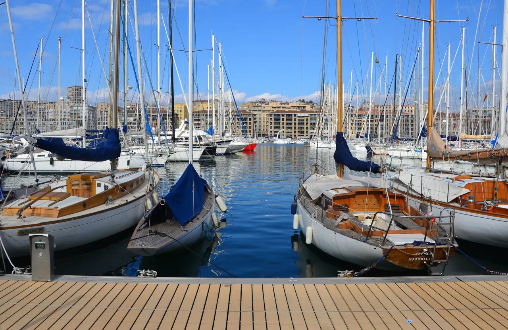

{kind=link}
관광·미술관
Nous avons déjà des billets.
이미 표가 있습니다.
누 자봉 데자 데 비예

기원전 600년 고대 그리스 포카이아(Phocaea) 선원들이 배를 대고 '마살리아(Massalia)'를 건설했던 천연 만(Lacydon)에 자리한 프랑스에서 가장 유서 깊은 항구다.
2,600년 동안 마르세유의 무역과 이민, 문화가 유입되던 관문으로, 직사각형 모양의 만 안쪽에는 수천 척의 요트와 어선이 정박해 있고, 입구 양쪽에는 17세기 루이 14세가 지은 생장 요새(Fort Saint-Jean)와 성 니콜라 요새(Fort Saint-Nicolas)가 수문장처럼 마주 서 있다.
2013년 유럽 문화수도 지정을 계기로 세계적 건축가 노먼 포스터(Norman Foster)가 설계한 거대한 스테인리스 스틸 거울 차양 '롱브리에르(L'Ombrière)'가 항구 동쪽 Quai de la Fraternité에 세워져 마르세유 시민과 여행자의 만남의 광장이 되었다.
"항구 전체(수 km)를 무리하게 다 돌지 말고, Quai de la Fraternité에서 거울 차양과 아침 어시장을 본 뒤 북쪽 부두(Quai du Port)를 따라 르 파니에와 뮈셈 방향으로 40~50분만 걷는 것이 정석이다." 거울 아래 서서 항구의 물결과 군중이 거꾸로 반사되는 역동적인 풍경을 감상하고, 언덕 위 노트르담 드 라 가르드 대성당을 향해 열린 항구의 축선을 조망하기에 최적이다.
| 운영시간 | 항구 자체 시간 제한 없음. 어시장(Quai de la Fraternité)은 매일 아침 약 07:30–12:30 또는 08:00–13:00, 날씨·계절에 따라 규모 변동 |
|---|---|
| 휴무 | 공공 항구 — 연중무휴, 휴무 없음 |
| 예약 | 예약 불필요. 칼랑크 유람선·페리보트만 별도 |
| 소요시간 | 40–50분 재확인 |
| 항목 | 상세 정보 |
|---|---|
| 위치 | Quai de la Fraternité / Quai du Port, 13001 Marseille |
| 운영/요금 | 연중 상시 개방 / 무료 |
| 대중교통 | 지하철 M1 'Vieux-Port' 역 직결 / Aix-en-Provence에서 Ligne 50 버스로 Saint-Charles역 도착 후 지하철 2정거장 또는 도보 15분 |
| 보행 주의 | 소매치기 주의 (항구 광장 주변 인파 밀집 지역) |
| 연계 동선 | Quai de la Fraternité → Quai du Port 북쪽 부두 도보 이동 → Le Panier 구시가지(도보 5분) 또는 Mucem/Fort Saint-Jean(도보 15분) |
벨기에 부두 한가운데 높이 6m, 가로 46m, 세로 22m로 설치된 거대한 캐노피다. 초정밀 연마된 스테인리스 표면이 지면의 보행자들과 수면의 요트, 푸른 하늘을 거울처럼 반사하여, 아래에 서서 위를 올려다보는 이들에게 비현실적인 공간감을 선사한다.
Quai de la Fraternité에서 매일 아침 약 07:30–12:30 또는 08:00–13:00에 어부들이 당일 새벽 지중해에서 낚아 올린 생선을 판매한다. 날씨와 계절에 따라 규모는 달라진다.
Nous avons déjà des billets.
이미 표가 있습니다.
누 자봉 데자 데 비예
On peut prendre des photos ?
사진 찍어도 되나요?
옹 푀 프랑드르 데 포토
Où commence la visite ?
관람은 어디서 시작하나요?
우 코망스 라 비지트

폴 세잔이 생의 마지막 4년(1902–1906) 동안 매일 그림을 그렸던 언덕 위 아틀리에. 북향 채광창, 대형 캔버스용 벽 슬릿, 정물화에 등장했던 올리브 단지와 해골이 그대로 보존된 근대 미술의 성지.

폴 세잔이 20세부터 60세까지 40년간 머물며 화가로 성장했던 가문의 여름 저택. 살롱의 초기 벽화, 마로니에 가로수길, 분수 연못, 그리고 화가가 최초로 생트 빅투아르 산을 그렸던 역사적 현장.

마르세유와 카시스 사이에 걸쳐 20km에 걸쳐 펼쳐진 유럽 유일의 지중해 연안 국립공원. 에메랄드빛 바다로 수직 낙하하는 백색 석회암 피오르 협만들의 장관.

엑상프로방스 건축물의 황금빛 사암을 공급하던 고대·중세 채석장. 직각으로 깎인 붉은 사암 절벽과 소나무 숲 사이에서 세잔이 큐비즘의 기하학적 구도를 태동시켰던 야외 작업장.

유럽 최고 높이의 해안 절벽 캅 카나유(Cap Canaille) 아래 자리한 아늑한 지중해 어항. 파스텔톤 가옥, 칼랑크 국립공원 유람선 출발지, 유서 깊은 카시스 화이트 와인(AOC Cassis)의 고향.

1651년 옛 성벽 자리에 조성된 440m의 플라타너스 가로수길. 북쪽의 활기찬 카페와 남쪽의 고요한 17세기 귀족 저택, 4개의 유서 깊은 분수가 관통하는 엑상프로방스의 심장.